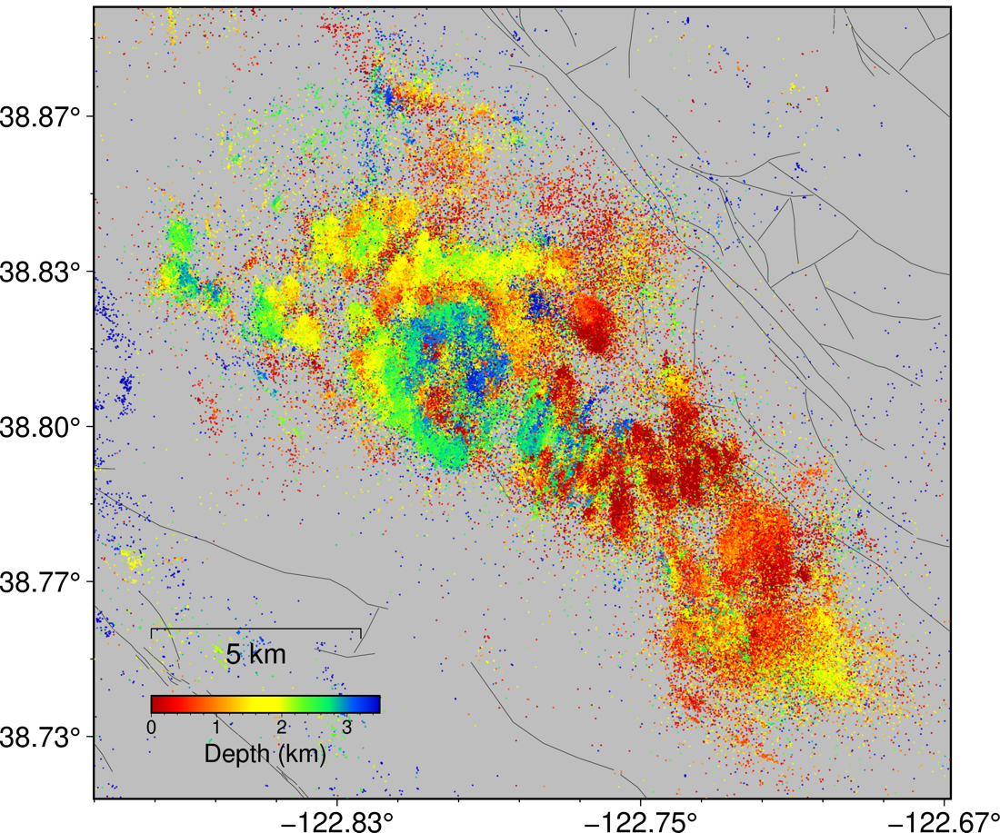

Final project — The Geysers
Everyone works the same field. You choose the question.

Why this field
The Geysers has been generating electricity since 1960, and drawing down ever since. Installed
capacity peaked at 2,043 MW in 1989. The plants lose 70–80% of the steam they produce to
evaporation in their cooling towers, so only a fraction ever returns as condensate: the reservoir has
been losing mass for sixty years, and pressure with it. Four-dimensional tomography watched it dry
out — the low-Vₚ/Vₛ anomaly filling the reservoir strengthened from 9% to 13.4% between 1991 and
1998 as liquid water was replaced by steam (Gunasekera et al. 2003, 10.1029/2001jb000638).
The response was to import water. Treated municipal wastewater has been piped in since the late
1990s, and in November 2003 the Santa Rosa–Geysers Recharge Project began delivering about
42,000 m³ a day along a 65 km pipeline — a 40% increase in field-wide injection, undertaken to slow
the pressure decline (Stark et al. 2005; Goyal & Conant 2010, 10.1016/j.geothermics.2010.09.007).
The seismicity is the side effect of all this, and it is why the field is worth a course project: the forcing is industrial, it is seasonal, and its history is documented. Injection rises in winter, and the seismicity follows.
The field also changed its mind about that. Eberhart-Phillips & Oppenheimer (1984) analysed the
first decade and reported "no consistent pattern of correlation between injection and seismicity"
(10.1029/jb089ib02p01191). Forty years and far denser catalogues later the correlation is taken as
established — Trugman, Shearer & Borsa (2016) find the background rate rose about 50% with strong
seasonal fluctuation after the pipeline (10.1002/2015jb012510) — and the argument has moved on to
lag and mechanism: ≈2 weeks field-wide (Leptokaropoulos et al. 2018, 10.1093/gji/ggx481), against a
seasonal signal migrating downward and taking ≤6 months to reach 3 km below the injection depth
(Johnson, Totten & Bürgmann 2016, 10.1002/2016gl069546).
A good project should be able to say why 1984 saw nothing, and what would have been needed to see it.
Questions
Each one is live in the literature. Each names the sessions whose methods apply, and the baseline you must beat or show to be sufficient.
1 · How long does the reservoir take to respond, and does the lag depend on depth? The published answers disagree by an order of magnitude — ≈2 weeks field-wide, up to 6 months at depth. Measure the annual cycle in the catalogue, then measure its phase as a function of depth. Sessions: Sep 8, Sep 15. Baseline: a single field-wide lag. Show that depth-dependence is resolvable.
2 · Why did 1984 see no correlation? Sub-sample your catalogue down to 1980s completeness and station coverage, and find out what it takes to make the modern signal disappear. This is a question about detection, not about the Earth. Sessions: Sep 8, Oct 6. Baseline: the full catalogue result, degraded step by step.
3 · Does the b-value track injection, and is the variation resolvable?
Reported b at The Geysers is high and varies: 1.18 ± 0.06 under rising injection against 1.10 ±
0.05 under falling (Leptokaropoulos et al. 2018, 10.1007/s11600-018-0215-1), while
Martínez-Garzón et al. (2014) report b falling at peak injection (10.1002/2014jb011385).
They disagree. Confront it with σ_b = b/√N: with your N, is a difference of 0.08 detectable at all?
Session: Sep 8. Baseline: one b for the whole field, all time.
4 · What are the faults, and do they survive a change of method? The seismicity is a dense 3-D point cloud. Recover planes from it and compare with mapped structures. Session: Sep 22. Baseline: k-means, which cannot find planes. Show why, then do better.
5 · Is the field deepening? Twenty-five years of production cools and depressurises the reservoir, and depth distributions are reported to change. Separate a real change from a change in what the network can detect. Sessions: Sep 8, Sep 15. Baseline: fixed depth distribution, time-varying detection threshold.
6 · Are there repeating earthquakes, and do they track the season? Cross-correlate waveforms, build families, ask whether recurrence follows the injection cycle. Sessions: Oct 20, Nov 3. Baseline: catalogue locations alone — are "repeaters" merely nearby events?
7 · What does a machine-learning catalogue add, and what does it get wrong? A deep-learning catalogue finds far more events than a routine network catalogue. Where do the extra events come from — smaller magnitudes, busier periods, particular places? Which do you not believe? Sessions: Oct 6, Nov 3. Baseline: the routine catalogue. A genuine evaluation problem.
8 · Can next month's rate be forecast?
Shcherbakov (2024) models induced rate as a convolution of forcing with a response kernel
(10.1785/0220240157). Try it with the seasonal cycle as the forcing. The honest result may be that
you cannot beat persistence.
Sessions: Sep 8, Sep 15. Baseline: next month equals this month. Beat it under a split that respects time.
9 · Are the sources ordinary earthquakes?
About 65% of Geysers events carry non-double-couple components above 25%, larger near wells and
during high injection (Martínez-Garzón et al. 2017, 10.1002/2016gl071963). Test on your own events.
Session: Nov 17. Baseline: a pure double-couple fit — show what it fails to explain.
Bring your own question if you have one. It must be answerable with these data in the time available.